Illusion Equipments and Enchants (17.1)
- This page refers to equipments and enchants for the Episode 17.1 - Illusion. For information on Illusion Dungeons, see Illusion Dungeons.
Equipment Exchange
To start the exchange, you must first complete the Capturing Elyumina quest.
Elyumina will appear after you speak with the Rebellion in Cor, at . You can then exchange both equipment types from her.
OS Weapons
OS weapons can be obtained by exchanging 1 Broken Weapon and 50 Unknown Parts, with Elyumina.
You'll get a random weapon from the list below.
| Image | Name | Description |
|---|---|---|
| Burning Knuckle-OS [2] |
ATK + 3%.
Attack: 175 Weight: 90 Weapon Level: 4 Required Level: 130 Usable Jobs: Sura | |
| 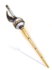 | Cannon Rapier-OS [2] |
MATK + 150.
Attack: 160 Weight: 80 Weapon Level: 4 Required Level: 130 Usable Jobs: Swordsman classes, Novice classes, Thief classes, Merchant classes. |
| Saphir Mace-OS [2] |
Can't be destroyed.
Attack: 185 Weight: 80 Weapon Level: 4 Required Level: 130 Usable Jobs: Genetic | |
| 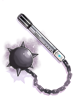 | Ultio-OS [2] |
MATK + 170.
Attack: 150 Weight: 120 Weapon Level: 4 Required Level: 130 Usable Jobs: Archbishop |
| 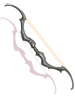 | Virtual Bow-OS [2] |
ATK + 3%.
Attack: 200 Weight: 120 Weapon Level: 4 Required Level: 130 Usable Jobs: Ranger |
| 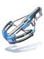 | MH-P89-OS [2] |
ATK + 3%.
Attack: 170 Weight: 120 Weapon Level: 4 Required Level: 130 Usable Jobs: Minstrel, Wanderer |
| 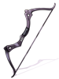 | AC-B44-OS [2] |
MATK + 135.
Attack: 190 Weight: 60 Weapon Level: 4 Required Level: 130 Usable Jobs: Shadow Chaser |
| 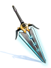 | Beam Claymore-OS [2] |
Can't be destroyed.
Attack: 250 Weight: 180 Weapon Level: 4 Required Level: 130 Usable Jobs: Swordsman classes |
| Rutilus Stick-OS [2] |
Can't be destroyed.
Attack: 80 Weight: 90 Weapon Level: 4 Required Level: 130 Usable Jobs: Novice classes, Mage classes, Acolyte classes, Soul Linker classes | |
| 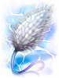 | Electric Fox-OS [2] |
MATK + 350.
Attack: 250 Weight: 120 Weapon Level: 4 Required Level: 130 Usable Jobs: Summoner (Doram) |
| Meuchler-OS [2] |
ATK + 3%.
Attack: 190 Weight: 130 Weapon Level: 4 Required Level: 130 Usable Jobs : Assassin classes. | |
| Blasti-OS [2] |
Can't be destroyed.
Attack: 400 Weight: 450 Weapon Level: 4 Required Level: 130 Usable Jobs: Mechanic | |
| 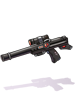 | HR-S55-OS [2] |
ATK + 3%.
Attack: 250 Weight: 100 Weapon Level: 4 Required Level: 130 Usable Jobs: Gunslinger classes. |
| 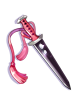 | Kuroiro-OS [2] |
MATK + 150.
Attack: 150 Weight: 90 Weapon Level: 4 Required Level: 130 Usable Jobs: Ninja classes |

|
Circuit Board-OS [2] |
ATK + 3%.
Attack: 180 Weight: 120 Weapon Level: 4 Required Level: 130 Usable Jobs: Sage classes, Priest classes, Star Gladiator classes |
| 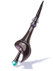 | Boost Lance-OS [2] |
Increases attack speed (reduces delay after attack by 3%).
Attack: 190 Weight: 100 Weapon Level: 4 Required Level: 130 Usable Jobs: Royal Guard |


Illusion Armors
Illusion Armors can be obtained by exchanging 50 Cor Cores, with Elyumina.
You can choose the exact piece you want.
| Image | Name | Description |
|---|---|---|
| 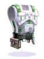 | Illusion Armor A-type [1] |
ATK + 100.
Defense: 105 Weight: 100 Required Level: 130 Jobs: All |
| 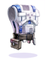 | Illusion Armor B-type [1] |
MATK + 100.
Defense: 105 Weight: 100 Required Level: 130 Jobs: All |
| Illusion Engine wing A-type [1] |
MaxHP + 1000.
Defense: 50 Weight: 90 Required Level: 130 Jobs: All | |
| Illusion Engine wing B-type [1] |
MaxHP + 1000.
Defense: 50 Weight: 90 Required Level: 130 Jobs: All | |
| Illusion Leg A-type [1] |
MaxSP + 200
Defense: 20 Weight: 50 Required Level: 130 Jobs: All | |
| Illusion Leg B-type [1] |
MaxSP + 200
Defense: 20 Weight: 50 Required Level: 130 Jobs: All | |
| 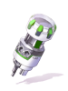 | Illusion Booster R [1] |
ATK + 5%.
Defense: 0 Weight: 10 Required Level: 130 Jobs: All |
| 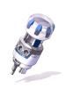 | Illusion Booster L [1] |
ATK + 5%.
Defense: 0 Weight: 10 Required Level: 130 Jobs: All |
| 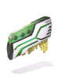 | Illusion Battle Chip R [1] |
MATK + 5%.
Defense: 0 Weight: 10 Required Level: 130 Jobs: All |
| 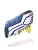 | Illusion Battle Chip L [1] |
MATK + 5%.
Defense: 0 Weight: 10 Required Level: 130 Jobs: All |
Equipment Enchanting
OS Weapons
OS Weapons can receive random enchants, through Weapon Modifiers. They can be obtained by exchanging 5 Cor Cores or at the price of 1,000,000 zeny, with the Rebellion .
You are able to choose between a Physical or Magical type of Weapon Modifications. Once you've chosen a category, you will get an enchant tier at random:
- Normal Weapon Modifier
- Advanced Weapon Modifier
- Special Weapon Modifier
Using a Weapon Modifier will open up an enchanting window that will list every OS Weapon on your inventory. Confirming the enchant will consume the item and imbue the weapon with 2 random enchants from different lists, based on their enchanting slot.
You can re-enchant it as much as you want with another Weapon Modifier. The new enchants will completely replace the old ones, you can't keep any of previous ones.
Merging Enchants
In case you get too many Normal and Advanced Weapon Modifiers, they're still useful. You can merge them for their better versions:
- 3 Normal Weapon Modifier and 50,000 zeny for 1 Advanced Weapon Modifier
- 3 Advanced Weapon Modifier and 150,000 zeny for 1 Special Weapon Modifier
Physical based Weapon Modifiers
| Normal Weapon Modifier (physical) | |
|---|---|
| 1st Enchant | 2nd Enchant |
|
|
| Advanced Weapon Modifier (physical) | |
|---|---|
| 1st Enchant | 2nd Enchant |
|
|
| Special Weapon Modifier (physical) | |
|---|---|
| 1st Enchant | 2nd Enchant |
|
|
Magical based Weapon Modifiers
| Normal Weapon Modifier (magical) | |
|---|---|
| 1st Enchant | 2nd Enchant |
|
|
| Advanced Weapon Modifier (magical) | |
|---|---|
| 1st Enchant | 2nd Enchant |
|
|
| Special Weapon Modifier (magical) | |
|---|---|
| 1st Enchant | 2nd Enchant |
|
|
Illusion Armors
The Illusion equipments can be enchanted by using Modification Modules, given by Rebellion .
You can exchange 30 Unknown Parts and 5 Cor Cores for a random Modification Module.
To apply the Modification Modules, equip the Illusion armor and then speak with RS26 . The enchanting process consumes the Modification Module and never fails.
Every Illusion equipment can receive up to 3 modifications, but each Module type can only be applied a certain number of times, depending of the equipment piece.
For Legendary Enchants however, only one can be socketed at any given time, even if they're not the same.
The following table lists the available modules, their effects and their enchantment limitations.
| Modification Module | Modification Orb | Effect | Location | Max Count |
|---|---|---|---|---|
| Common Enchants | ||||
 Modification Module (Defense) Modification Module (Defense)
|
 Modification Orb (Defense) Modification Orb (Defense)
|
Def + 25 If refine rate is 7 or higher, Def + 10 If refine rate is 9 or higher, Def + 10 |
 Illusion Armor A-type Illusion Armor A-type Illusion Armor B-type Illusion Armor B-type Illusion Engine Wing A-type Illusion Engine Wing A-type Illusion Engine Wing B-type Illusion Engine Wing B-type Illusion Leg A-type Illusion Leg A-type Illusion Leg B-type Illusion Leg B-type
|
3 |
| Modification Module (Magic Defense) |
 Modification Orb Modification Orb(Magic Defense) |
Mdef + 2 If refine rate is 7 or higher, Mdef + 3 If refine rate is 9 or higher, Mdef + 3 | ||
 Modification Module Modification Module(Vit) |
 Vit + 3 Vit + 3
|
Vit + 3 |  Illusion Booster R Illusion Booster R Illusion Booster L Illusion Booster L Illusion Battle Chip R Illusion Battle Chip R Illusion Battle Chip L Illusion Battle Chip L
| |
 Modification Module Modification Module(Luk) |
 Luk + 3 Luk + 3
|
Luk + 3 | ||
 Modification Module Modification Module(Str) |
 Str + 3 Str + 3
|
Str + 3 | Illusion Booster R Illusion Battle Chip R
| |
 Modification Module Modification Module(Agi) |
 Agi + 3 Agi + 3
|
Agi + 3 | ||
 Modification Module Modification Module(Int) |
 Int + 3 Int + 3
|
Int + 3 | Illusion Booster L Illusion Battle Chip L
| |
| Modification Module (Dex) |
 Dex + 3 Dex + 3
|
Dex + 3 | ||
| Rare Enchants | ||||
 Modification Module Modification Module(HP recovery) |
Modification Orb (HP recovery) |
HP recovery + 20%. | Illusion Booster R Illusion Battle Chip R
|
2 |
 Modification Module Modification Module(SP recovery) |
Modification Orb (SP recovery) |
SP recovery + 20%. | Illusion Booster L Illusion Battle Chip L
| |
 Modification Module (Spell) Modification Module (Spell)
|
 Spell 5 Spell 5
|
MATK +18 Decrease Casting Time by 10%. |
Illusion Booster R Illusion Booster L Illusion Battle Chip R Illusion Battle Chip L
|
1 |
 Modification Module Modification Module(Attack Speed) |
 ASPD Lv 4 ASPD Lv 4
|
ASPD + 10%. | ||
 Modification Module Modification Module(Fatal) |
Fatal Lv 4 | Critical damage + 10%, CRI + 4. | ||
 Modification Module Modification Module(Expert Archer) |
 Expert Archer 5 Expert Archer 5
|
Ranged Attack +10%. | ||
 Modification Module (Vital) Modification Module (Vital)
|
 Modification Orb (Vital) Modification Orb (Vital)
|
MaxHP + 5%. If refine rate is 7 or higher, MaxHP + 500 If refine rate is 9 or higher, additional MaxHP + 750 |
Illusion Leg A-type Illusion Leg B-type
|
2 |
 Modification Module (Mental) Modification Module (Mental)
|
 Modification Orb (Mental) Modification Orb (Mental)
|
MaxSP + 5%. If refine rate is 7 or higher, MaxSP + 100 If refine rate is 9 or higher, additional MaxSP + 150 | ||
| Modification Module (Heal) | Modification Orb (Willpower) | Increases heal effectiveness by 5%. If refine rate is 7 or higher, increases heal effectiveness by additional 5%. If refine rate is 9 or higher, increases heal effectiveness by additional 5%. | ||
 Modification Module (Power) Modification Module (Power)
|
 Modification Orb (Power) Modification Orb (Power)
|
Atk + 5%. If refine rate is 7 or higher, Atk + 25. If refine rate is 9 or higher, additional Atk + 25. |
Illusion Armor A-type Illusion Armor B-type
| |
 Modification Module (Magic) Modification Module (Magic)
|
 Modification Orb (Magic) Modification Orb (Magic)
|
Matk + 5%. If refine rate is 7 or higher, Matk + 25. If refine rate is 9 or higher, additional Matk + 25. | ||
 Modification Module (Shooter) Modification Module (Shooter)
|
Modification Orb (Shooter) | Increases long ranged physical damage by 3%. If refine rate is 7 or higher, increases long ranged physical damage by additional 2%. If refine rate is 9 or higher, increases long ranged physical damage by additional 2%. | ||
 Modification Module (Fast) Modification Module (Fast)
|
 Modification Orb (Fast) Modification Orb (Fast)
|
ASPD + 1. If refine rate is 7 or higher, increases attack speed (reduces delay after attack by 3%). If refine rate is 9 or higher, increases attack speed (reduces delay after attack by additional 3%). |
Illusion Engine Wing A-type Illusion Engine Wing B-type
| |
 Modification Module (Caster) Modification Module (Caster)
|
Modification Orb (Caster) | Reduces variable casting time by 5%. If refine rate is 7 or higher, reduces variable casting time by additional 3%. If refine rate is 9 or higher, reduces variable casting time by additional 3%. | ||
 Modification Module (Critical) Modification Module (Critical)
|
 Modification Orb (Critical) Modification Orb (Critical)
|
Cri + 10. If refine rate is 7 or higher, increases critical damage by 5%. If refine rate is 9 or higher, increases critical damage by additional 5%. | ||
| Unique Enchants | ||||
 Modification Module Modification Module(Delay After Skill) |
 Modification Orb Modification Orb(Delay After Skill) |
Reduces delay after skill by 5%. If refine rate is 7 or higher, reduces delay after skill by additional 5%. If refine rate is 9 or higher, reduces delay after skill by additional 5%. |
Illusion Armor A-type Illusion Armor B-type
|
1 |
 Modification Module Modification Module(Fixed Casting) |
 Modification Orb Modification Orb(Fixed Casting) |
Reduces fixed casting time by 0.3 second. If refine rate is 7 or higher, reduces fixed casting time by additional 0.2 second. If refine rate is 9 or higher, reduces fixed casting time by additional 0.2 second. |
Illusion Leg A-type Illusion Leg B-type
| |
 Modification Module Modification Module(Above All) |
 Modification Orb Modification Orb(Above All) |
Reduces physical and magical damage taken from all property enemies by 5%. If refine rate is 7 or higher, reduces physical and magical damage taken from all size enemies by 5%. If refine rate is 9 or higher, reduces physical and magical damage taken from all race enemies by 5% (excludes player). |
Illusion Engine Wing A-type Illusion Engine Wing B-type
| |
 Modification Module Modification Module(Drain Life) |
 Modification Orb Modification Orb(Drain Life) |
Has a 2% chance to restore 2% of damage as HP when dealing physical damage. | Illusion Booster R Illusion Battle Chip R
| |
| Modification Module (Drain Soul) |
 Modification Orb Modification Orb(Drain Soul) |
Has a 1% chance to restore 1% of damage as SP when dealing physical damage. | Illusion Booster L Illusion Battle Chip L
| |
 Modification Module Modification Module(Magic Healing) |
 Modification Orb Modification Orb(Magic Healing) |
Has a 2% chance to recover 400 HP per 0.5 second for 10 seconds when dealing magical damage. | Illusion Booster R Illusion Battle Chip R
| |
 Modification Module Modification Module(Magic Soul) |
 Modification Orb Modification Orb(Magic Soul) |
Has a 1% chance to recover 80 SP per 0.5 second for 10 seconds when dealing magical damage. | Illusion Booster L Illusion Battle Chip L
| |
| Legendary Enchants | ||||
 Modification Module Modification Module(Unlimited Vital) |
Modification Orb (Unlimited Vital) |
Has a chance to gain "Everlasting Life" for 10 seconds when receiving physical or magical damage. [Everlasting Life] Vit + 50, recover 400 HP per 0.5 second, drains 20 SP per second for 10 seconds. |
Illusion Leg A-type Illusion Leg B-type
|
1 |
 Modification Module Modification Module(Spell Buster) |
 Modification Orb Modification Orb(Spell Buster) |
Has a chance to gain "Magic Storm" for 10 seconds when dealing magical damage. [Magic Storm] Int + 50, Matk + 15%, Atk - 15% for 10 seconds. | ||
 Modification Module Modification Module(Firing Shot) |
Modification Orb (Firing Shot) |
Has a chance to gain "Plunging Shooter" for 10 seconds when dealing physical damage. [Plunging Shooter] Dex + 50, increases long ranged physical damage by 10%, drains 20 SP per second for 10 seconds. | ||
 Modification Module Modification Module(Overpower) |
 Modification Orb Modification Orb(Overpower) |
Has a chance to gain "Raging Fight" for 10 seconds when dealing physical damage. [Raging Fight] Str + 50, Atk + 15%, Matk - 15% for 10 seconds. | ||
 Modification Module Modification Module(Fatal Flash) |
 Modification Orb Modification Orb(Fatal Flash) |
Has a chance to gain "Deadly Lightspeed" for 10 seconds when dealing physical damage. [Deadly Lightspeed] Agi + 50, increases critical damage by 10%, drains 300 HP per second for 10 seconds. | ||
 Modification Module Modification Module(Lucky Strike) |
 Modification Orb Modification Orb(Lucky Strike) |
Has a chance to gain "Good Fortune" for 10 seconds when dealing magical damage. [Good Fortune] Luk + 50, increases all property magical damage by 10%, drains 300 HP per second for 10 seconds. | ||
Refinement Cube
With the implementation of Episode 17.2 - Sage's Legacy, players can now upgrade Illusion gear directly from +4 to +7 with the use of the following item:
- Illusion Reinforcement Cube - Illusion Gear, 10,000,000 zeny per cube.
For more info, check Automatic Equipments and Enchants (17.2).